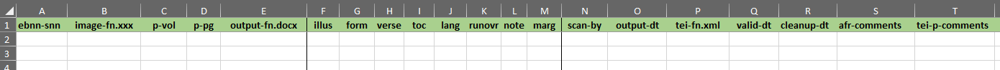

Create a Page-Inventory File
Create a page-inventory file.
The Nineteenth-Century Knowledge Project contains hundreds of thousands of individual files. The primary record of file contents at the OCR stage is the page-inventory, a spreadsheet that we create for every page section.
The page-inventory file documents:
The page-inventory file is named ebnn-snn.xslt—such as
 —and is
saved in the relevant section of the edition repository, like the
eb03/a02 folder. Later, when the docx files are
transformed to TEI, the page-inventory file is moved to the
outputs/page folder.
—and is
saved in the relevant section of the edition repository, like the
eb03/a02 folder. Later, when the docx files are
transformed to TEI, the page-inventory file is moved to the
outputs/page folder.
Note: Accuracy in
matching filenames is critical. We use filenames recorded in the page-inventory to generate metadata in the master file
.
-
Open the blank inventory file,
outputs/records/inventory-blank.xslx, and copy it to the
Print Edition Repository for the new page section. Rename the file
with the edition-section system
(ebnn-snn).
Figure 1. Blank Inventory file  - In the new inventory file, update cell A1 with the correct edition and section information. Update the section label on the tab at the bottom of the window (labeled ebnn-snn) by double-clicking it.
-
In Windows File Explorer, open the home directory for the page section folder in ebnn/_images, containing the
original images used for the ocr-project. Make a note of the
total number of image files.
All files in the directory will have the same name and number format, incrementing by one number.
-
Copy the name of the first image into the image-fn
column, without the extension. Append the file extension (.tiff, .jp2,
etc.) to the column label, instead.
Figure 2. Columns for inventory spreadsheet 
-
Select the filename you added to the image-fn column.
Position your cursor over small square at the bottom-right corner of the
selection. When the cursor changes to a + sign,
left-click and drag down the column. Excel will populate the rest of the
image-fn column for you.
You should now have a column with the same number of filenames that you noted in the ebnn/images page section folder. Make sure the name of the last file in the image-fn column matches that of the image folder.
- Enter the print volume number in the p-vol column.
-
Enter the print page number for each image in the p-pg
column, using the same technique as above to auto-populate the column.
Be sure to account for unnumbered pages, such as plates, even if they were not scanned and output. This gives us a guide to every image file in the section.
-
In the output-fn.docx column, enter the filename for
each docx file in the output, corresponding to the image
filename in the image-fn column.
This may take some time. ABBYY FineReader may miss a page, or it may add a blank page. Take your time. If in doubt, always consult the original page images to make sure the text in the docx file represents the text in the corresponding image file.
-
The columns F-M mark eight page features that we want to track. If the feature
is present, indicate it in the box, generally with an x.
The features are:
- illus
- illustrations
- form
- formulas or equations
- verse
- verse set off from the rest of the text by an indent
- toc
- table of contents or an article index
- lang
- languages on the page that are not recognizing well. Use a one- or two-letter code for the language, such as g (Greek), me (Middle English), h (hebrew), etc.
- runovr
- footnote or table text that runs over to the next page
- marg
- margin problems, to indicate pages where the scanned text is distorted or lost in the book binding.
- note
- footnotes or marginal notes
- Add the initials for the person drawing boxes on each page in column F, scan-by. If one person did the entire section, you only need to enter it once.
- Add the date the docx files were created in the output-dt column.
- The tei-fn.xml column lists the filenames for the TEI files, after the docx files are transformed.
- The valid-dt column indicates when the TEI files were validated by the supervisor, as part of the quality-control process.
- The cleanup-dt column documents when the TEI encoding is cleaned up in Oxygen XML Editor.
- The afr-comments column is for recording page anomalies. Use this column to note any pages with Hebrew-language text, footnote text that runs over from one page to another, complex tables that cannot be captured appropriately, or any other information we will need to know for later in the production process. See Special Cases.
- The tei-p-comments column is for recording any changes to the page file made by the operator.